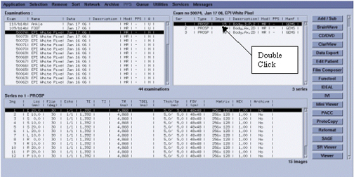
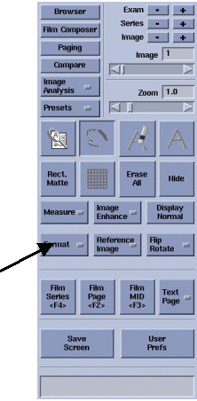
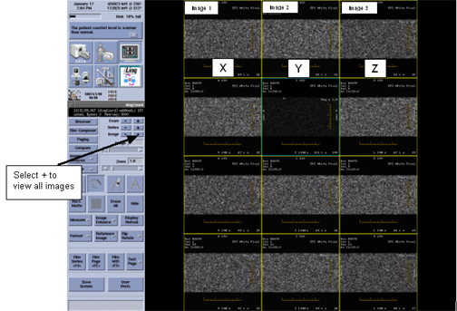

Operating Documentation
Direction 5133315-3, Rev# 14
Signa EXCITE HD 1.5T Service Methods
Module Version 1.0, Version Date 4/26/07
Operating Documentation |
The purpose of this document is to view the processed White Pixel images in a manner that displays the Gradient modes (X, Y, Z). This makes it easy to determine if white pixels are isolated to a specific gradient or across all axis.
No tools are needed.
Applicable to all Software revisions.
1. Run White Pixel using either Head or Body in white pixel test mode 1.
2. After scan is complete, go into Browser. See Illustration 1. Select the Exam, series and images from the white pixel scan that was executed. Double click on the series. This will display the images.
Illustration 1: Browser

3. Select the Format option on the Browser. See Illustration 2.
Illustration 2: Format

4. Select either a 3×3, 3×4 or 3×5 format which displays three (3) horizontal columns. Example can be seen in Illustration 3. The first column is X gradient, middle column is Y gradient, and the right column is the Z gradient. This is useful for isolating white pixel issues with specific gradient outputs.
| NOTE: | The Window Width / Level values displayed in the browser images will be the same ones generated by the "auto-view". Window width/level is a direct result of the highest pixel value found in the image and will help you have an immediate idea of the white pixel count by simply looking to the WW / WL numbers at the images. |
| NOTE: | Verify that the images are in sequential order, starting with Image 1 in the upper left corner, Image 2 in the center and Image 3 in the upper right corner. In order for this process to work the three columns must contain the same multiple of three. |
Illustration 3: Proper Viewing Format

5. View all 48 images by selecting the Image + option to browse through all images. See Illustration 3.